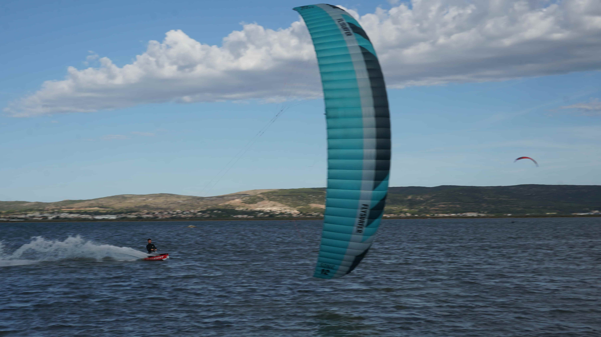

C'est quoi le Kitesurf ?
Le kitesurf est un sport de glisse aérotracté qui combine deux éléments essentiels : le vent pour faire voler la voile (le "kite"), et l'eau pour glisser avec la planche.
L'étang d'Ingril, avec son eau peu profonde et son vent fréquent (tramontane, mistral, marin, thermique), est l'un des meilleurs spots de la région pour débuter en toute sécurité.

Le Snowkite
Sur les pistes enneigées, le kite prend une toute autre dimension. Le snowkite permet de glisser sur la neige avec des skis ou un snowboard, tracté uniquement par le vent.
Pas besoin de remontée mécanique — le kite te tire vers le haut ! Une discipline spectaculaire qui permet d'explorer des espaces immenses en totale liberté.
ATTENTION, la montagne est un domaine DANGEUREUX
Le Mountain Kite
Le kite ne se limite pas à l'eau et à la neige ! Sur le sable ou la terre, avec un mountainboard (skateboard tout terrain), le kite devient une machine à sensations.
Idéal pour progresser dans le pilotage de la voile — se pratique par vent faible, sans plan d'eau.

Accessible à tous !
Le kite s'adresse à tout le monde — petits et grands, débutants et confirmés. Avec une bonne progression pédagogique, les plus jeunes apprennent à piloter une voile en quelques minutes seulement !
La preuve en image 😄 — alors pourquoi pas toi ?
Réserver un cours →Progression d'apprentissage
Les grandes étapes pour devenir autonome
Théorie & Sécurité
Connaissance du matériel, règles de sécurité, zones de pratique, météo. Avant de rider, il faut comprendre son environnement.
Pilotage du Kite
On commence les pieds dans le sable ou dans l'eau. Apprendre à faire voler la voile, gérer la puissance, décollage et atterrissage maîtrisés.
Bodydrag & Gestion dans l'eau
Dans l'eau sans planche : se laisser tracter par le kite pour apprendre à contrôler la voile en conditions réelles.
Waterstart & Premier Ride
Le grand moment ! Se mettre debout sur la planche et rider pour la première fois. Une sensation inoubliable garantie.
Ride des 2 cotés & Upwind
Bientôt l'autonomie ! Tu remontes au vent, plus besoin de marcher !
Félicitation 🏆
Leçons en Vidéo
Complète tes cours avec ces ressources pédagogiques
Leçon 1 — Décollage & Atterrissage
Les bases du décollage et de l'atterrissage sont fondamentales. Avant de courir, il faut savoir marcher !
▶ Voir la leçonLeçon 2 — Le Waterstart
Tu maîtrises la voile, tu peux décoller et atterrir sans difficulté... Tu es prêt pour le waterstart !
▶ Voir la leçonTu veux aller plus vite ?
Rien ne remplace un cours en présentiel avec un moniteur. Réserve ta session dès maintenant !
📅 Réserver un cours →